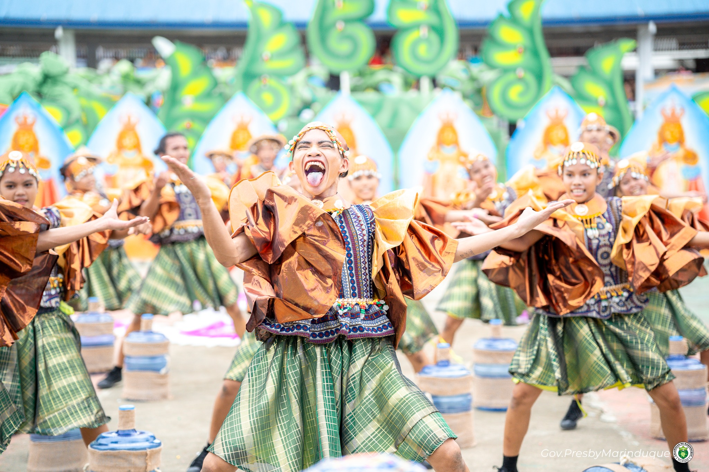
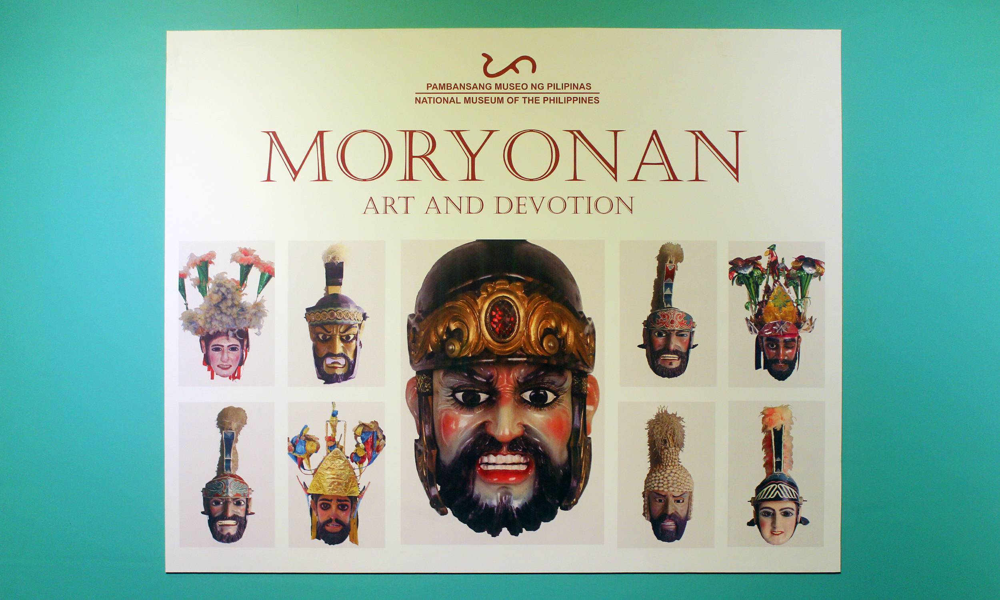

Festivals & Culture
Where faith, artistry, and community spirit converge in celebrations unlike anywhere else in the world.
Festival Calendar
From Holy Week to December, Marinduque's festivals are living expressions of faith, artistry, and community identity — deeply rooted and joyfully celebrated.

Moriones Festival
📍 Province-wide, all municipalities of Marinduque
The most iconic festival in Marinduque, the Moriones (or Moryonas) is a week-long Lenten celebration where devotees dress as Roman soldiers in elaborate hand-carved wooden masks and vivid period costumes. The dramatization centers on Longinus — the blind centurion who was miraculously healed after piercing Christ's side with a lance at the crucifixion.
The story builds through the week: Longinus proclaims his faith, is sentenced to death by Pilate, and flees through the island's streets pursued by other Moriones — crowds joining the chase. The dramatic culmination on Easter Sunday features a theatrical public beheading, drawing thousands of pilgrims and international visitors annually.

Putong Festival
📍 All municipalities, Marinduque
The Putong is a centuries-old ritual of welcome, thanksgiving, and blessing performed through call-and-response chanting. Distinguished guests of honor are ceremonially crowned with a woven palm frond headpiece — putong means "to crown" in Tagalog — while singers weave verses of prayer, praise, and welcome.
A profound expression of Filipino hospitality, the Putong transforms every arrival into a communal celebration of life. It has been performed for visiting dignitaries, religious leaders, and ordinary travelers alike, embodying Marinduque's core belief that every visitor is worthy of being treated as royalty.

Maalindog–Tubaan Festival
📍 Gasan, Marinduque
Held in January in honor of the patron saint of Gasan, the Maalindog–Tubaan Festival is a vibrant celebration of Gasan's identity and heritage. The festival features street dancing competitions, cultural parades, trade fairs, and the unique Tubaan tradition celebrating the island's coconut wine culture.
Local artisans display their crafts, cooks compete in culinary showcases, and musicians fill the streets with traditional music. The festival is a wonderful window into Gasan's community pride — less internationally known than the Moriones but deeply beloved by locals.

Bila-Bila Festival
📍 Santa Cruz, Marinduque
A magical December festival characterized by colorful parachute-like bilang-bilang lanterns released into the night sky. Residents compete to create the most elaborate and luminous displays, using traditional materials and craftsmanship passed down through generations.
As darkness falls, hundreds of glowing lanterns drift upward, turning the municipality into a sea of warm light. The sight is breathtaking — a fittingly luminous way to close the year on an island that glows with culture and warmth throughout all twelve months.
The Art of the Morion Mask
The Morion mask is the soul of the Moriones Festival. Each helmet-mask is hand-carved from a single block of light wood — typically lanete or other local varieties — and painted to depict a scowling, bearded Roman centurion. No two masks are exactly alike; each is the unique expression of its maker's artistry.
A quality mask takes weeks to complete, going through stages of rough carving, fine detailing, sanding, priming, and multiple layers of oil-based paint. Celebrated mask-makers in Marinduque are held in high esteem and their craft is passed carefully to the next generation.
Masks can be purchased as souvenirs in Boac and throughout the province. Prices range from a few hundred pesos for simple versions to several thousand for master-crafted pieces.
